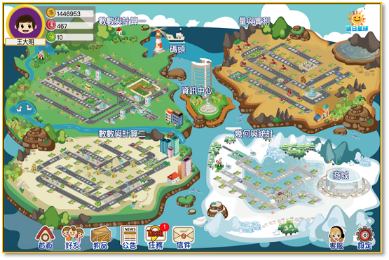

從碩士時期於 PDA 上開發的算術遊戲，到開始開發數位平台系統，我的工作位於數位學習設計、人機互動與教育數據科學的交會處。
我是國立中央大學 學習科技研究中心的學者，博士時期於陳德懷講座教授的帶領下，負責多個 K–12 數位學習平台的工程與研究。
我於 2019 年取得中央大學網路學習科技研究所博士學位，博士論文為《數學島：興趣驅動數學學習系統的設計與初步評估》。在攻讀博士前我曾在業界工作，那段經歷讓我在意「上線」與「發表」同等重要。
今日我的工作橫跨：多模態 AI 閱讀同伴架構、全台教師培訓、百萬筆學生互動資料的分析與適性回饋設計。
國家級數位學習環境的全端設計與交付。
以 IDC 理論為基礎，設計愉快且興趣驅動的系統。
精熟度估計、閱讀行為建模、多模態評量。
整合 GPT、Whisper 與 RAG，打造閱讀與數學 AI 同伴。
建立系統、進入教學現場研究、指導學生、並迭代下一個版本。
獨立研究多模態 AI 與學習數據分析——整合語音、文字與行為訊號，建模並支持大規模 K-12 學習者。
設計並開授給非資訊背景大學生的跨領域 AI 課程，涵蓋機器學習、深度學習、自然語言處理、電腦視覺與 AI 倫理。
設計並開授給非資訊背景大學生的跨領域 AI 課程，涵蓋機器學習、深度學習、自然語言處理、電腦視覺與 AI 倫理。
研究所層級課程，帶領在職中小學教師認識數位學習設計、合作學習與數位化課堂評量。
統籌 14 位研究助理與研究生，同時執行多項教育部與國科會計畫。擔任多個服務 2,000 所以上學校平台的主要工程與研究負責人。
博士論文：《數學島：興趣驅動數學學習系統的設計與初步評估》。自 2010 年起帶領明日星球學習平台的開發，並於國小現場進行三年的設計導向研究。
碩士論文：《算術方塊—心算練習個人遊戲的設計》，在 PDA 時代以類俄羅斯方塊機制支援國小低年級的基礎算術練習。
奠基於資料結構、演算法、資料庫等核心課程。大學專題以 ASP.NET 與 MS SQL 建立自主學習系統。
我所主導或深度參與的代表性專案——從全國閱讀推動到 AI 聊書原型。
K-12 遊戲式數位學習環境，整合「數學島」與「明日書店」，推廣至全台 2,000 所以上學校。自 2010 年起主導開發，並持續演進系統架構、教材管線與資料分析。
整合 OpenAI Whisper、向量檢索與 GPT 系列模型，建構能即時捕捉語音、行為與情意的 AI 閱讀同伴，以行為–情意–認知三面向模型提供適性鷹架。
「明日數學」將數學概念以互動式遊戲形式呈現，並以課程地圖的方式引導學生進行自我進度學習。學生透過挑戰數學任務闖關，依自己的能力，規劃與經營自己的學習，進而提高學生的信心與興趣。同時，教師可以透過學習歷程清楚掌握每位學生的學習狀況與進度，給予學生不同的建議與幫助，解決學生的學習困難。 cot.org.tw

以學生在線上學習系統中的回饋請求與解題時間預測其數學精熟度。ICCE 2021，與 Kannan 等人合著。
協助執行教育部明日閱讀計畫以及明日數學計畫，並執行多項國科會研究計畫。
全端工程、AI 與資料、教育設計——整合於一套實踐之中。
橫跨數學學習、閱讀、AI 同伴與遊戲式學習設計的期刊與研討會論文。
無論是研究合作、平台諮詢，或是教學邀約——都歡迎與我聯絡。